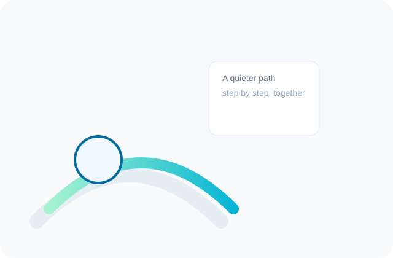

Therapeutic framework
My work combines relational depth with measurable skills. I tailor technique to person, not the other way around—your values guide the plan.

Core elements I use
Safety & stabilization
Establishing regulation and manageable pacing before deeper work.
Reflective exploration
Tracing relational patterns and self-narratives that shape experience.
Skills & experiments
Behavioral tests between sessions to shift habits and build confidence.
Integration & maintenance
Plans for sustaining change outside of therapy sessions.
How long does it take?
There is no set timeline—some focused goals take 6–12 sessions, while deeper patterns benefit from longer collaboration. We’ll review progress periodically and agree on the next steps together.
Quick questions
Do you accept insurance?
I provide superbills for out-of-network reimbursement; please check with your carrier for coverage details.
Is telehealth available?
Yes, I offer secure video sessions for clients in {{STATE}} and in-office appointments when available.
Can I email between sessions?
Brief administrative emails are fine. Clinical guidance is best handled in session; for urgent needs call the number on the Contact page.
Closing note
Therapy is a collaborative process. My role is to offer a steady, informed presence; your role is to bring honesty and choice. Together we’ll shape a plan that aligns with your values and pace.
If you are experiencing an emergency, call local emergency services or your crisis line immediately. Therapy here is outpatient and not a substitute for emergency care.